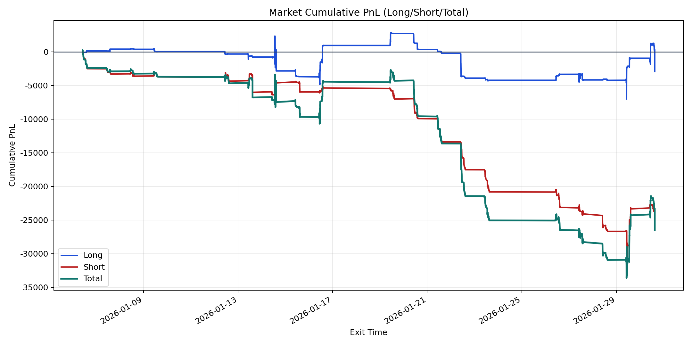
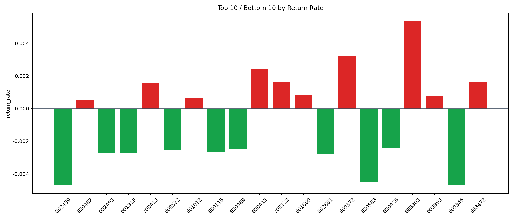

| repo_root | /home/haoranyou/data/output/alpha0.4_1w_5s_3ticks_index_filter/index_weights_300 |
|---|---|
| period_months | 1 |
| period_label | 2026-01-06_to_2026-01-30 |
| start_time | 2026-01-06 10:07:22 |
| end_time | 2026-01-30 15:00:00 |
| n_trades | 4494 |
| n_symbols | 48 |
| total_pnl | -26516.292900000095 |
| long_total_pnl | -2921.1198500001055 |
| short_total_pnl | -23595.173049999983 |
| total_entry_notional | 41626099.0 |
| long_entry_notional | 19942054.0 |
| short_entry_notional | 21684045.0 |
| total_return_rate | -0.0006370112390305922 |
| long_return_rate | -0.0001464803901343415 |
| short_return_rate | -0.0010881352187749095 |
| top_symbols_by_return | ["688303", "600372", "600415", "300122", "688472", "300413", "601600", "603993", "601012", "600482"] |
| bottom_symbols_by_return | ["600346", "002459", "600588", "002601", "002493", "601319", "600115", "600522", "600989", "600026"] |

